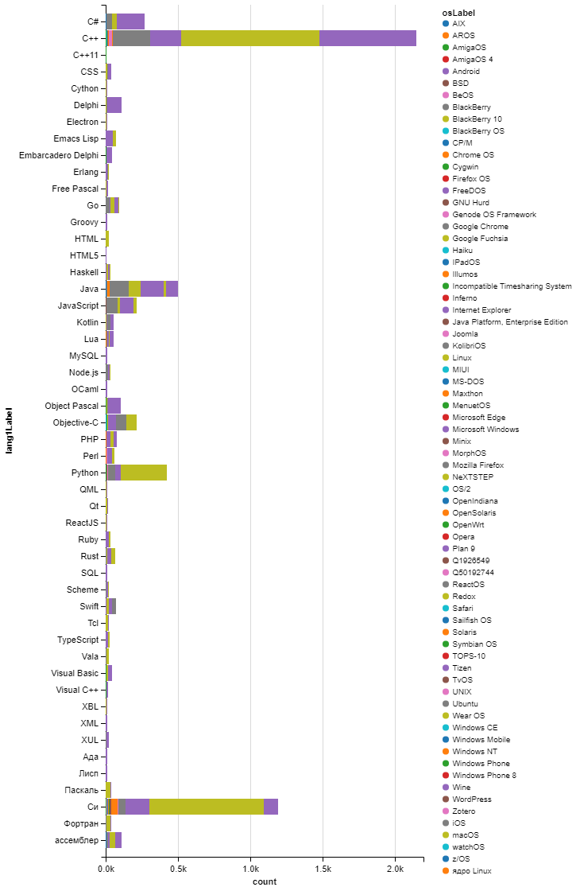

Which computer language is best? There are lots of opinions ...
12 Best Programming Languages to Learn in 2022 11 Most In-Demand Programming Languages in 2022 The 9 Best Programming Languages to Learn in 2021 What’s the Best Programming Language to Learn First? It Depends 